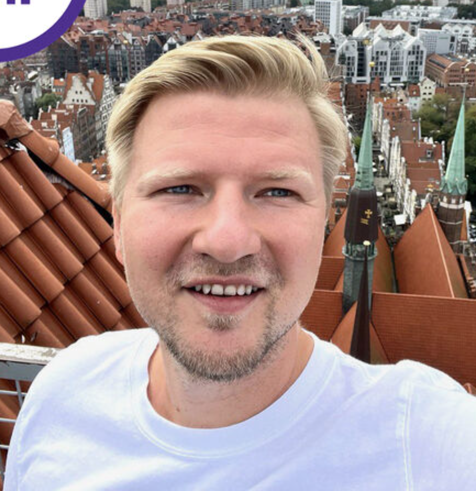
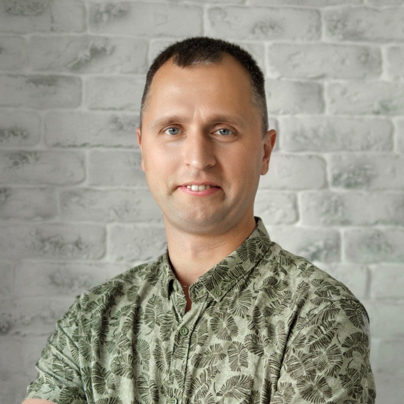

01
Senior Fullstack
Engineer
Backend, frontend, mobile, legacy rescues — I’ve shipped them all. This depth is what keeps AI-generated code honest.
AI-Driven Product Engineer & Technical Lead
8 years of shipping across stacks. Now using AI to build faster — and product thinking to build right.
Over 8 years I’ve shipped across the full stack — backend, frontend, mobile, leadership, presales, startups and legacy rescues.
After seeing what really moves the needle, I doubled down on two multipliers: AI to build MVPs and production code at a fraction of the time, and a product lens to make sure what we ship actually moves the business.
My senior engineering background keeps AI-generated code honest — readable, tested, and ready for prod.
Engineering experience. AI as a multiplier.
A product lens to
connect it all.
Backend, frontend, mobile, legacy rescues — I’ve shipped them all. This depth is what keeps AI-generated code honest.
I use AI to compress weeks into days — shipping MVPs, AI features and agentic workflows on top of the latest frontier models.
MVPs, AI product features, internal automation
I lead teams, run presales, and use a product lens to make sure engineering effort lands where the business actually wins.
Product strategy, architecture, code quality, team leadership
After years of shipping for startups and enterprises, I started building my own — using AI as a force-multiplier to take ideas from sketch to production in a fraction of the usual time.
Private Node.js trading algorithm that optimizes crypto trades and manages risk using real-time market data.
 BIRDS.BEL↗
BIRDS.BEL↗
An AI-native app I’m building from the ground up — product, design and code shipped with the help of frontier models, then hardened by hand.
People I’ve worked with
have said some nice things...
“Highly appreciate an opportunity to work with Maksim for both great results & a positive mindset, outstanding soft skills which helped to overcome any impediments we faced. He is a great developer with needed experience, motivation, curiosity, attention to details, ability to solve any problem. Maksim is also a reliable team player, who helped when it was required, even beyond a limited capacity or responsibilities zone. Continue running towards the challenges, this will make you even stronger!”

“I've worked with Maksim on the same project and can definitely say that he is a highly qualified specialist. Maksim has deep knowledge and good experience in frontend development. Maksim very proactive person who helps to investigate the issues and find the best approach to solve them. Many thanks to Maksim for all activities in our project. Maksim is a good team player. It was a real pleasure to work together with Maksim on the same project for one year.”

“Max is a person who cares about the team, the value team brings to the customer, and the work the team tries to complete. We were working together for more than a year on a product on data visualization. Max has done a huge amount of work. He was performing the frontend developer role but still showed professionalism with the backend and troubleshooting. In many cases, Maxim was working all alone on smaller projects. From my point of view, this ability to work alone - requirements, code, management, giving estimations - is a quality of great professionalism and costs a lot as Max has never missed estimates.”
Building with AI, leading with product,
shipping with intent.